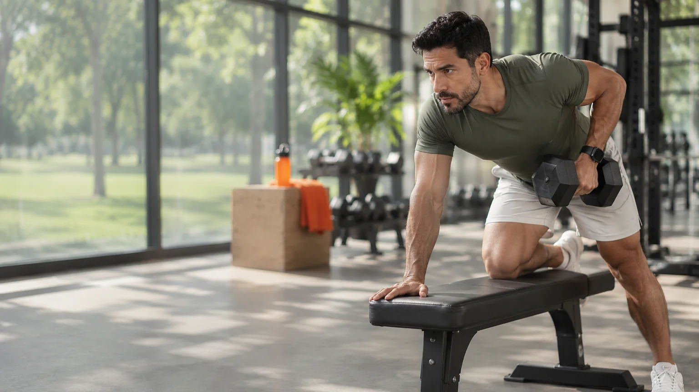
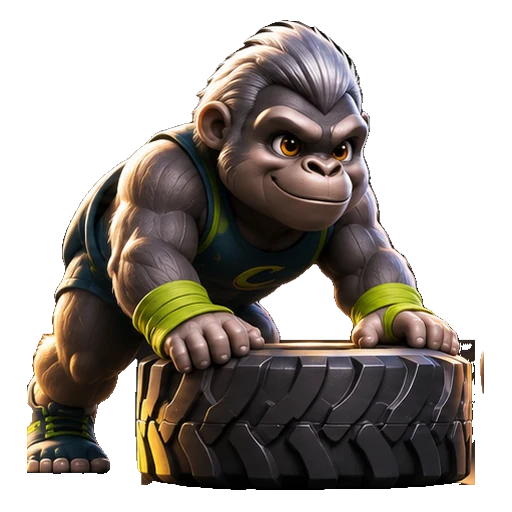
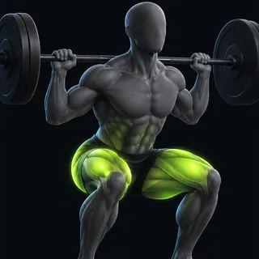
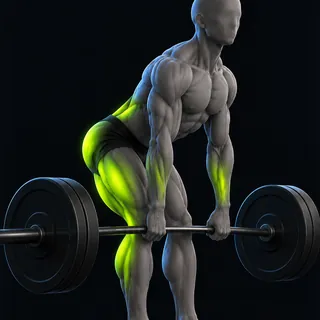
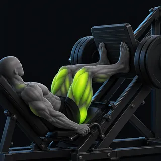
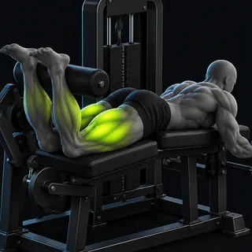
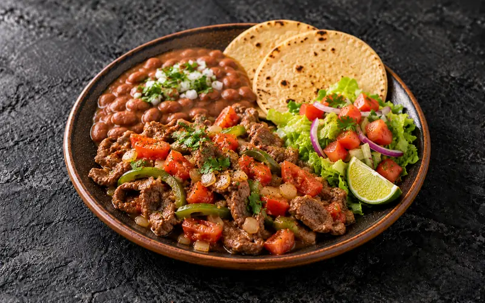
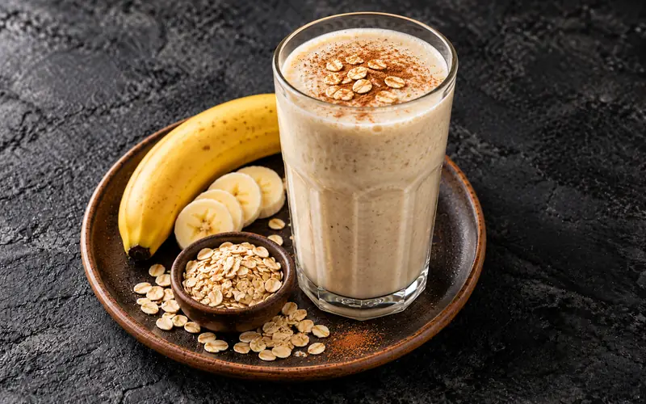

Inicio
¿Qué entreno hoy? El día es la pantalla; un solo botón.

Pierna+ glúteo

Semana 5 de 12Fuerza e hipertrofia · 52 días
PR
Pedro: “Hoy controla la bajada en 3 segundos. Sin prisa.”
Esta semana
2de 4
Bam · Joven
640pts

9:41
- La foto y el botón ocupan la primera pantalla: entras, ves tu día y le das Iniciar.
- El consejo del día es de tu entrenador, con su nombre.
- Semana y mascota en dos cuadros; el aviso del club sigue saliendo arriba cuando hay.
Mi plan
¿Qué me toca esta semana? La semana como tira de fotos.
Semana 5 de 12Fuerza e hipertrofia
Mi plan
Armado por Pedro Ruiz · 4 días por semana
Pierna
+ glúteo
Hoy~55min
6ejercicios
20series

Sentadilla libre4 × 8 · descanso 2 min72.5+2.5 kg
Peso muerto rumano3 × 1060repite
Prensa de piernas3 × 12140+10 kg
Curl femoral acostado3 × 1235repite9:41
- Los días son fotos: se reconoce la semana de un vistazo; hoy va más ancho con borde naranja.
- Cada ejercicio dice el peso que te toca hoy y si sube o se repite.
Progreso
¿Estoy cambiando? Tu cambio, medido con tu objetivo.
Semana 5 de 12Evaluación en 1 semana
Mi progreso
Objetivo: incremento de masa muscular
Tu fuerza desde la semana 0
+11%
Promedio de tus 4 ejercicios principales. Es lo que más pesa en tu objetivo.
4ºTu lugar en masa muscularDe 38 socios con tu mismo objetivo · subiste 2
Evaluaciones
0 · 6 · 12Sem 0Hecha · 11 ene
Sem 6En 1 semana
Sem 12Cierre · 5 abr
Tus ejercicios
mejor pesoSentadilla libre64 → 71 kg71+7 kg
Press banca plano53.5 → 59.5 kg59.5+6 kg
9:41
- Arriba, un número: el que cuenta para tu objetivo (fuerza en masa muscular, grasa en definición).
- Tu lugar en el reto, solo el tuyo, sin nombres de otros socios.
- Las evaluaciones de las semanas 0, 6 y 12 a la vista.
Nutrición
¿Qué como ahora? La comida que toca, en grande.
Semana 5 de 12Fuerza e hipertrofia
Nutrición
Calculado con tus datos · 4 comidas

Ahora · 2:30 pmComida
Bistec con arroz y verduras
1,015 kcal · 57 g proteína · toca para ver porciones
1,560de 2,926 kcalhoy
92 / 169 gProteína
190 / 380 gCarbos
40 / 81 gGrasas
Tu día
marca lo que comiste8:00am Avena con plátanoDesayuno · 545 kcal
Avena con plátanoDesayuno · 545 kcal
Avena con plátanoDesayuno · 545 kcal2:30pmBistec con arrozComida · 1,015 kcal
5:30pm

Licuado post entrenoColación · 410 kcal9:41
- La comida de esta hora sale grande con su foto; las demás, en línea de tiempo.
- Marcas lo que ya comiste y ves cuánto te falta del día.
Perfil
¿Quién soy en el reto? Tu credencial del club.
Semana 5 de 12Fuerza e hipertrofia
Carlos Fitness
Masa muscular640puntos
14sesiones
4ºlugar
Mis datos
toca para cambiar80 kgPeso
178Estatura
86 cmCintura
9:41
- Una credencial con tu nombre, objetivo, puntos, lugar y tu mascota: se presume.
- Entrenador y mascota en una lista corta; tus datos en tres cuadros; lo de la cuenta al final.